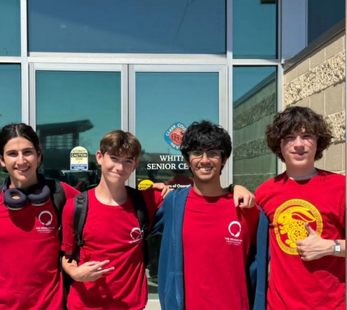
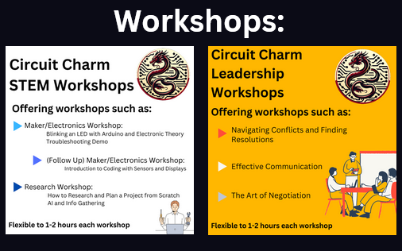
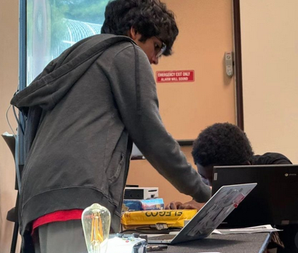
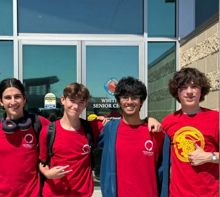
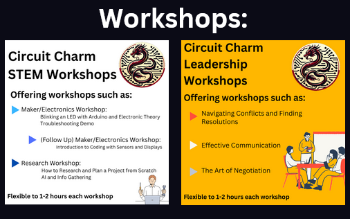
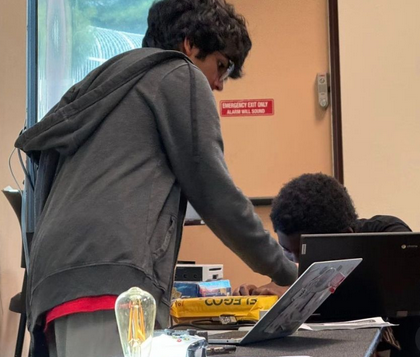

Project Pitch
Circuit Charm - Community Engagement through building the future generations learning skills through circuits!
Circuit Charm offers STEM and leadership workshops in “Teaching Life Skills Through Circuits”. The project is designed to educate lower-middle school students in 5th through 8th grade about STEM through circuits by teaching basic electronic theory, C++ coding for microcontrollers, and self-motivational “mastering mindset” skills, with hands-on labs.
The goal fosters a passion for computer science and engineering among students in grades 5-8. Using AI and beginner hardware in our workshops, we hope not just to enhance their STEM abilities but also to empower innovators with the skills students need for success!
Budgeting
First lesson we were taught under the DKF program, regardless of how much funding is available, it's effectiveness goes way farther. Workshops were altered to fit the budget while maintaining high impact and low costs for parts. To deal with high costs of laptops we were able to get a sponsor to donate 20 laptops for usse during the workshops.
Workshop Content Taught
A workshop normally lasted around 2 hours with 10-15 students per session and included portions from STEM (me) and Leadership (Dylan).
My STEM Workshop Portions:
• Building LED Circuits
Emphasized understanding theory and not just following step-by-step instructions
• Blinking an LED with Code
Emphasized same principles but for programming fundamentals
• Motion Sensor Circuit Project
Emphasized hands-on experience with both hardware and software components
• Cardboard Slope Challenge
Design a system to slow down a marble - encouraged creative problem-solving and teamwork
• AI Research & ChatGPT Prompting
Teaching kids to use AI tools for learning - kids loved making plans to develop their own interests!
Dylan's Leadership Workshop Portions:
• Speaking Up & Sharing Opinions
Building confidence in expressing ideas and viewpoints
• Self-Motivation & Growth Mindset
Developing intrinsic motivation for learning and personal development
• Mini-Presentation Exercise
Hands-on practice to develop public speaking confidence
Future Directions
Moving forward, we plan to expand Circuit Charm by partnering with more community centers and schools to reach a wider audience. We aim to develop advanced workshops that build on the foundational skills taught in the initial sessions, incorporating more complex projects and real-world applications. As I graduate high school and head to college, I am transitioning my role to a responsible member within Tech Club that will continue the project.